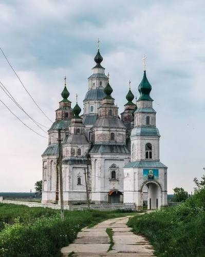
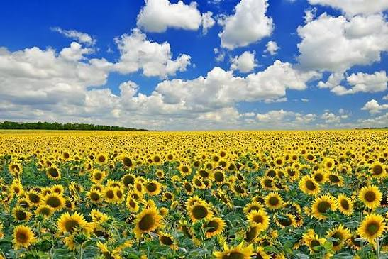

Україна - це країна широких полів, мальовничих доріг та старовинних храмів. Мені дуже дорогі рідні краї, де я виріс. Наведіть курсор на фотографії, щоб побачити коротку розповідь про кожну місцевість.
|
 Церква |
 Поле соняшників |